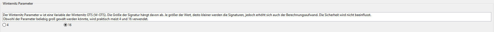
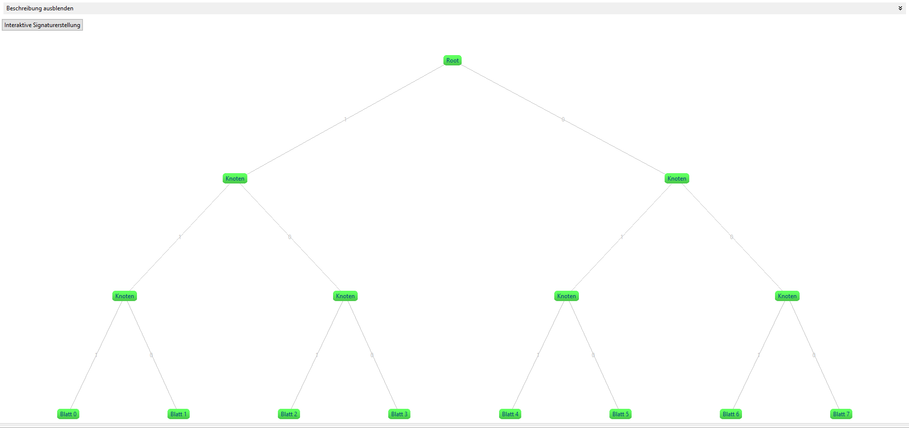
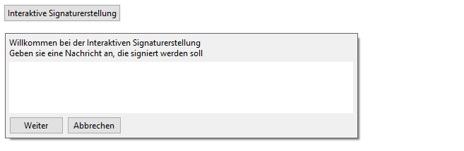
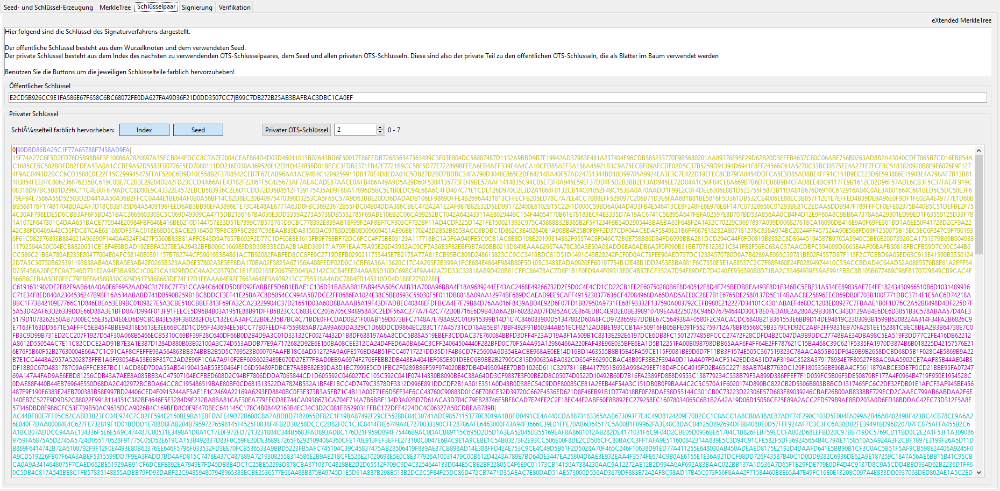

Diese Onlinehilfe erklärt die Funktionsweise des Plug-ins Merkle-Signature-Scheme.
Das Plug-in lässt sich über das Menü Visualisierungen oder über den Krypto-Explorer im Tab Visualisierungen starten.
Inhaltsübersicht:
1) Merkle-Signatur (MSS)
2) eXtended Merkle-Signatur (XMSS)
3) Bedienung
4) Quellen
Mit dem Merkle Signaturverfahren lässt sich eine Nachricht Quantencomputer-resistent signieren.

2) eXtended Merkle-Signatur (XMSS)
Das eXtended Merkle-Signature-Scheme (XMSS) basiert auf dem Merkle-Signature-Scheme (MSS) und erweitert dieses Verfahren. Die Hauptunterschiede zum MSS-Verfahren sind der Einsatz einer Bitmaske und eines sogenannten L-Trees. Durch diese beiden Erweiterungen kann auf eine kollisionsresistente Hashfunktion verzichtet werden und diese durch eine Second-Preeimage-resistente Hashfunktion ersetzt werden. Das hat zwei Vorteile: a) Da eine Second-Preeimage-resistente Hashfunktion eine schwächere Annahme ist, ist das XMSS-Verfahren stärker (schwerer zu brechen). b) Die erstellte Signatur ist kleiner.
XMSS benutzt als One-Time-Signatur (OTS) das Winternitz-OTS (WOTS). Es gibt zwei verschiedene Varianten, WOTS+ undr WOTS$. In diesem Plug-in verwenden wir WOTS+. In beiden Varianten kann eine beliebige Anzahl von WOTS-Schlüsselpaaren mit Hilfe eines Seedwertes und eines Pseudozufallszahlengenerators erzeugt werden. Es können insgesamt 2^h Nachrichten mit einer Länge von m Bytes signiert werden.
Die Bitmaske ist ein pseudozufälliger binärer Wert. Durch ihren Einsatz kann auf eine kollisionsresistente Hashfunktion verzichtet werden. Bitmasken werden im XMSS-Tree und im L-Tree verwendet.
Der Winternitz-Parameter ist eine Variable der Winternitz-OTS (W-OTS). Er bestimmt die Größe der Signatur. Je größer der Wert, desto kleiner werden die Signaturen, jedoch erhöht sich auch der Berechnungsaufwand. Die Sicherheit wird nicht beeinflusst.
Bei den L-Trees werden dieselben Hashfunktionen wie beim XMSS-Baum verwendet, jedoch eine andere Bitmaske. Die verwendete Bitmaske ist wiederum bei jedem L-Tree dieselbe.


In diesem Tab kann zwischen den einzelnen Verfahren (MSS, XMSS) gewechselt werden. Des Weiteren kann hier der Seed festgelegt werden, der Winternitz-Parameter kann eingestellt werden, die Anzahl der Secret Keys definiert und die Secret Keys erzeugt werden.

Dieser Bildausschnitt zeigt, wo der Seed festgelegt werden muss. Dieser wird benutzt, um die Secret Keys zu generieren. Es kann entweder ein eigener numerischer Seed benutzt werden, oder mit dem Button Neuen Seed erzeugen ein zufälliger Seed erzeugt werden.

Wenn als Verfahren eXtended Merkle-Signatur (MSS) gewählt wurde, so erscheint zusätzlich noch ein Feld, in dem man den Seed für die Bitmaske definieren kann.
Obwohl der Winternitz-Parameter beliebig groß gewählt werden könnte, können hier nur die Werte 4 oder 16 gesetzt werden, da diese am verbreitetsten sind.

In diesem Tab kann der MerkleTree inspiziert werden. Der Baum besteht aus den Leafs (Blättern, unterste Ebene), den Nodes und dem Root-Node, auch Merkle-Public-Key genannt. Wird auf einen Node geklickt, dann wird in Gelb der Pfad zur Wurzel angezeigt. In Rot wird der Verifizierungspfad angezeigt, welcher ein Teil der Signatur ist. Klickt man einen Node oder ein Blatt (Leaf) an, wird oben links der zugehörige Hashwert angezeigt. Mit einem Klick auf Beschreibung ausblenden wird der ganze Baum sichtbar.
Mit der Interaktiven Signaturerstellung kann man den Vorgang der Signaturerstellung Schritt für Schritt verfolgen.
Im dritten Tab wird der öffentliche Schlüssel und der private Schlüssel angezeigt. Die Schlüsselteile des privaten Schlüssels können farblich hervorgehoben werden.

In diesem Tab können Signaturen generiert werden. Diese werden mit den in Tab 1 generierten Keys erzeugt. Hier kann ein beliebiger Text eingegeben werden, welcher nach dem Drücken auf Nachricht signieren signiert wird.

Dieses Bild zeigt die Signatur einer Nachricht und die Länge der Signatur in Bytes. Die Signatur hat den folgenden Aufbau: Index des Schlüsselpaares | OTS-Signatur | Authentisierungspfad.

Im Tab Verifikation kann die zuvor erstellte Signatur verifiziert werden. Das korrekte Blatt (d.h. das mit dem richtigen Index) ist hierbei schon vorab ausgewählt. Wenn man auf Verifizieren klickt, so wird versucht, die Signatur mit dem ausgewählte Leaf zu verifizieren.

Wenn man ein anderes (falsches) Blatt auswählt und auf Verifizieren klickt, schlägt die Verifikation fehl.